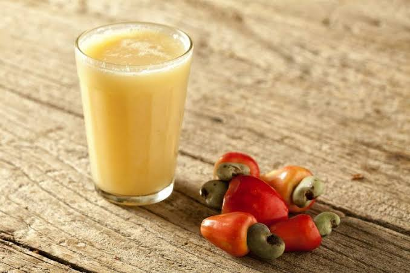

Cashew Fruit Juice

Refreshing drink that goes with any meal.
The Cashew Fruit is used by many in Jamaica to make a refreshing drink, that tastes like a cross between a mango and orange. Also known as Cashew Apple the fruit has more vitamin C than an orange. Enjoy our Cashew Fruit Juice recipe.
Ingredients
- 1 dozen Cashews fruit
- 2 Tablespoons sweetened condensed milk
- 3 drop vanilla extract flavoring
- 1 cup water
Steps
- Wash teh chasew fruit and remove the nut
- Cut up the fruit into cubes
- Put the fruit in a blender with the water and puree
- Pour the juice through a strainer into a container. Discard the fiber left in the strainer.
- Add the sweetened condensed milk and vanilla extract flavoring to the container (this step is optional as you can go natural). Mix the juice.
- Serve with ice